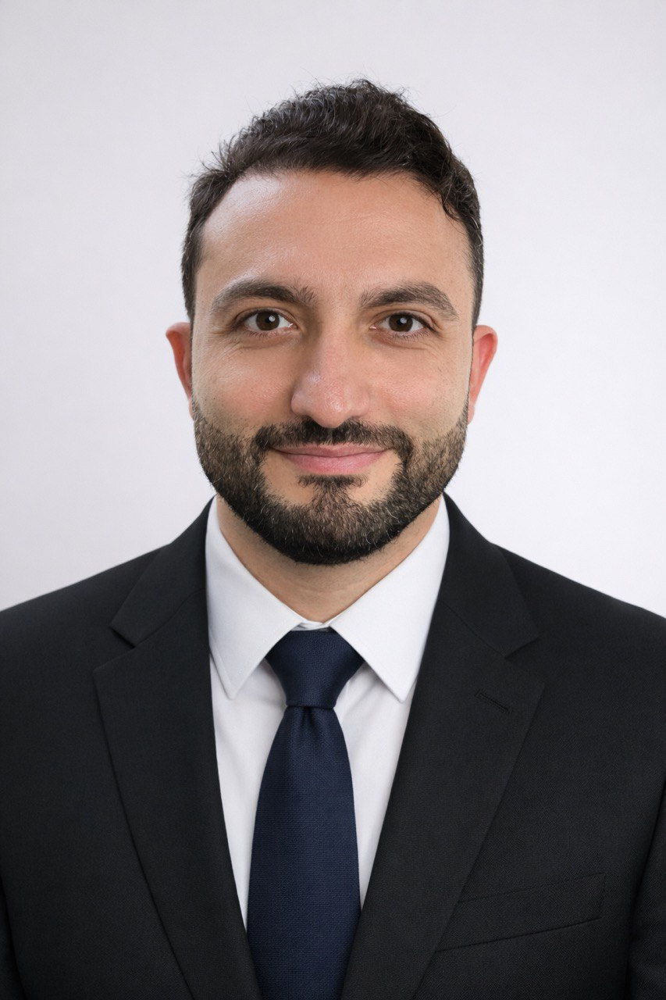

Healthcare NLP
Primary-diagnosis detection, medical text standardization, BERT-based modeling, and production deployment.
AI / Data Scientist · Production ML (PyTorch, SQL, Docker) · NLP & Retrieval · Forecasting & Time Estimation
AI/Data Scientist with 5+ years of experience across healthcare NLP, recommendation and search, forecasting, and end-to-end machine learning delivery — from framing and evaluation to deployment in containerized, production-ready workflows.

Primary-diagnosis detection, medical text standardization, BERT-based modeling, and production deployment.
Visual recommender systems, embedding-based similarity search, FAISS pipelines, and retrieval quality work.
Time-series modeling with Temporal Fusion Transformer and practical forecasting for planning use cases.
Containerized services, SQL-driven workflows, data pipelines, and delivery in cross-functional product environments.